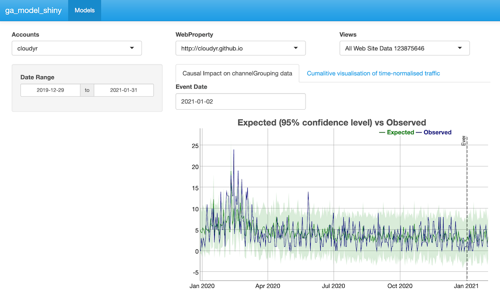

vignettes/models.Rmd
models.RmdDownloading Google Analytics data is all well and good, but the reason most users want to use the API is to then operate and act upon that data.
There are several tutorials linked from the homepage that demonstrate
various applications of using googleAnalyticsR to analyse
data, but they can still be intimidating for new users of R.
To make it easier to distribute these analysis,
googleAnalyticsR now includes the ga_model_*
functions to help end users get to insights more quickly.
ga_model objects can be saved to the new
.gamr format. Loading these files using
ga_model() and specifying your own Google Analytics viewId,
all the data processing, modelling and visualisation steps can be
encapsulated to give you the output.
.gamr files also includes the ability to create Shiny
modules which you can use to quickly create online Shiny dashboards
displaying the model results, and which can switch to users own Google
Analytics data using the multi-user login capabilities.
The .gamr file format can be shared with others online
or within your organisation.
You can also use model objects to create Shiny apps - see Model Shiny Templates
The above loads models within a wrapper function, but you can also
load model objects yourself via ga_model_load(). Included
within the package are some simple models to demonstrate its use which
use ga_model_load() to load from the package examples, via
ga_model_example()
The example below performs decomposition on the sessions to your website. Behind the scenes the model downloads your data with the right columns, applies the decomposition model then plots it, returning the data plotted for you to work with later:
library(googleAnalyticsR) # load library
# your own Google Analytics viewID
my_viewid <- 81416156
# load the model (equivalent to ga_model_load())
decomp_ga <- ga_model_example("decomp_ga.gamr")
# apply model to your data
d1 <- ga_model(my_viewid, model = decomp_ga)plot of chunk unnamed-chunk-1
This model allows you to alter the date range of the data fetched:
# change default date range to 20 days ago to yesterday
d2 <- ga_model(my_viewid, model = decomp_ga, date_range = c("20daysAgo","yesterday"))plot of chunk unnamed-chunk-2
You can examine the properties of the model and the arguments it was sent via its print method:
decomp_ga## ==ga_model object==
## Description: Performs decomposition and creates a plot
## Data args: viewId date_range
## Input data: date sessions
## Model args: df
## Output args: x y
## Packages:You can also see an overview on how a particular call to a model was created by printing out the model’s result directly to console:
d2## ==ga_model_result object==
## Input names: date sessions
## Input dimensions: 20 2
## Output names: x seasonal trend random figure type
## Plot class: NULL
## Model args passed: date_range = c("20daysAgo", "yesterday")
## ==ga_model object==
## Description: Performs decomposition and creates a plot
## Data args: viewId date_range
## Input data: date sessions
## Model args: df
## Output args: x y
## Packages:And if you want to review the code of the model, use
ga_model_write() to write the functions out to a file.
ga_model_write(decomp_ga, "my_model.R")There are Shiny templates available that can be used with model objects to quickly create Shiny apps for users. For example:
ga_model_shiny("inst/models/decomp_ga.gamr", template = ga_model_shiny_template("template1"))Templates can be created and parsed via {{ var }}
templating rules. The default variables used in all templates are
web_json, scopes (for Google auth), and
title. You can pass other template specific ones via the
... argument. The ga_model argument is used to
load the previously created ga_model object into the Shiny
app.
library(shiny)
library(googleAuthR)
library(googleAnalyticsR)
gar_set_client(web_json = "{{ web_json }}",
scopes = "{{ scopes }}")
# loads a pre-existing model
model <- ga_model_load("{{ ga_model }}")
modelUi <- model$shiny_module$ui
modelServer <- model$shiny_module$server
## ui.R
ui <- fluidPage(title = "{{ shiny_title }}",
authDropdownUI("auth_menu"),
h2("Model Description"),
textOutput("model_description"),
h2("Model Output"),
modelUi("{{ ga_model_name }}")
)
## server.R
server <- function(input, output, session){
token <- gar_shiny_auth(session)
al <- reactive({
req(token)
ga_account_list()
})
# module for authentication
view_id <- callModule(authDropdown, "auth_menu", ga.table = al)
output$model_description <- renderText(model$description)
# module to display model results
modelServer("{{ ga_model_name }}", view_id = view_id)
}
shinyApp(gar_shiny_ui(ui, login_ui = silent_auth), server)There are some pre-created models and templates to help inspire your own. At the moment these are:
Models - accessed via ga_model_example()
"ga4-trend" - Fetch GA4 time-series, display via
Dygraphs"ga-effect" - Fetch UA time-series and use with
CausalImpact"decomp_ga" - Fetch UA time-series and perform
decomposition on them.Templates - accessed via
ga_model_shiny_template()
"template_ga4" - A basic Shiny dashboard with an
account selector for GA4"template_ua" - A basic Shiny dashboard with an account
selector for UA"shinydashboard_ga4" - Account selector for GA4 plus
date picker using library(shinydashboard) styling..gamr objects
To create your own models, you need to predefine all the functions to
look after the fetching, modelling and viewing of the data. You then
pass those functions to the ga_model_make() function.
The functions need to follow these specifications:
data_f - A function to collect the data you will need.
The first argument should be the view_id which will be pass
the viewId of Google Analytics property to fetch data from.model_f - A function to work with the data you have
fetched. The first argument should be the data.frame that is produced by
the data fetching function, data_f().output_f - A function to plot the data. The first
argument should be the data.frame that is produced by the model
function, model_f().... as an
argument.If you want to also create the Shiny modules, then you also need to specify:
outputShiny - the output function for the UI, such as
plotOutput
renderShiny - the render function for the server, such
as renderPlot
You then supply supporting information to make sure the user can run the model:
required_columns - Specification of which columns the
data will fetch. It will fail if they are not present.required_packages - The packages the end user needs to
have installed to run your functions.description - A sentence on what the model is so they
can be distinguished.To create the decomposition example model, this was applied as shown below:
get_model_data <- function(viewId,
date_range = c(Sys.Date()- 300, Sys.Date()),
...){
google_analytics(viewId,
date_range = date_range,
metrics = "sessions",
dimensions = "date",
max = -1)
}
decompose_sessions <- function(df, ...){
decompose(ts(df$sessions, frequency = 7))
}
decomp_ga <- ga_model_make(get_model_data,
required_columns = c("date", "sessions"),
model_f = decompose_sessions,
output_f = graphics::plot,
description = "Performs decomposition and creates a plot",
outputShiny = shiny::plotOutput,
renderShiny = shiny::renderPlot)The more arguments you provide to the model creation functions, the more complicated it is for the end user, but the more flexible the model. It is suggested making several narrow usage models is better than one complicated one.
For instance, you could modify the above model to allow the end user to specify the metric, timespan and seasonality of the decomposition:
get_model_data <- function(viewId,
date_range = c(Sys.Date()- 300, Sys.Date()),
metric,
...){
o <- google_analytics(viewId,
date_range = date_range,
metrics = metric,
dimensions = "date",
max = -1)
# rename the metric column so its found for modelling
o$the_metric <- o[, metric]
o
}
decompose_sessions <- function(df, frequency, ...){
decompose(ts(df$the_metric, frequency = frequency))
}
decomp_ga_advanced <- ga_model_make(get_model_data,
required_columns = c("date"), # less restriction on column
model_f = decompose_sessions,
output_f = graphics::plot,
description = "Performs decomposition and creates a plot",
outputShiny = shiny::plotOutput,
renderShiny = shiny::renderPlot)It would then be used via:
result <- ga_model(81416156, decomp_ga_advanced, metric="users", frequency = 30)plot of chunk unnamed-chunk-6
The model objects prints to console in a friendly manner:
decomp_ga_advanced## ==ga_model object==
## Description: Performs decomposition and creates a plot
## Data args: viewId date_range metric
## Input data: date
## Model args: df frequency
## Output args: x y
## Packages:You can save and load model objects from a file. It is suggested to
save them with the .gamr suffix.
# save model to a file
ga_model_save(decomp_ga_advanced, filename = "my_model.gamr")
# load model again
ga_model_load("my_model.gamr")You can use models directly from the file:
ga_model(81416156, "my_model.gamr")If you need to change parts of a model, ga_model_edit()
lets you change individual aspects:
ga_model_edit(decomp_ga_advanced, description = "New description")## ==ga_model object==
## Description: New description
## Data args: viewId date_range metric
## Input data: date
## Model args: df frequency
## Packages:You can also pass it the filename, which will load, make the edit, then save the model to disk again:
ga_model_edit("my_model.gamr", description = "New description")If you want to examine or change the functions in a model, you can
use ga_model_write() to write them to a file, or examine
them directly from the model object. The structure of the model object
can be examined using str():
str(decomp_ga_advanced, give.attr = FALSE)## List of 7
## $ data_f :function (viewId, date_range = c(Sys.Date() - 300, Sys.Date()), metric, ...)
## $ required_columns : chr "date"
## $ model_f :function (df, frequency, ...)
## $ output_f :function (x, y, ...)
## $ required_packages: NULL
## $ description : chr "Performs decomposition and creates a plot"
## $ shiny_module :List of 2
## ..$ ui :function (id, ...)
## ..$ server:function (input, output, session, view_id, ...)And you can access various elements by the usual list methods:
decomp_ga_advanced$data_f## function(viewId,
## date_range = c(Sys.Date()- 300, Sys.Date()),
## metric,
## ...){
## o <- google_analytics(viewId,
## date_range = date_range,
## metrics = metric,
## dimensions = "date",
## max = -1)
## # rename the metric column so its found for modelling
## o$the_metric <- o[, metric]
##
## o
##
## }
decomp_ga_advanced$description## [1] "Performs decomposition and creates a plot"To make your own portable GA Effect, this model uses the CausalImpact and dygraphs libraries to make a plot of your GA data.
This example model is available via
ga_model_example("ga-effect.gamr")
The data will focus on sessions per channel grouping. For this example the end user can select the date range, but we set a default of the last 600 days.
get_ci_data <- function(viewId,
date_range = c(Sys.Date()-600, Sys.Date()),
...){
google_analytics(viewId,
date_range = date_range,
metrics = "sessions",
dimensions = c("date", "channelGrouping"),
max = -1)
}The modelling step is copied over from the dartistics.com time-services example.
The function transforms the data into the right shape, and performs the CausalImpact model. The user can select the event date to examine, the channel to test (response) and possible predictors to help the model.
# response_dim is the channel to predict.
# predictors help with forecast
do_ci <- function(df,
event_date,
response = "Organic Search",
predictors = c("Video","Social","Direct"),
...){
message("CausalImpact input data columns: ", paste(names(df), collapse = " "))
# restrict to one response
stopifnot(is.character(response),
length(response) == 1,
assertthat::is.date(event_date),
is.character(predictors))
pivoted <- df %>%
tidyr::spread(channelGrouping, sessions)
stopifnot(response %in% names(pivoted))
## create a time-series zoo object
web_data_xts <- xts::xts(pivoted[-1], order.by = as.Date(pivoted$date), frequency = 7)
pre.period <- as.Date(c(min(df$date), event_date))
post.period <- as.Date(c(event_date + 1, max(df$date)))
predictors <- intersect(predictors, names(web_data_xts))
## data in order of response, predictor1, predictor2, etc.
model_data <- web_data_xts[,c(response,predictors)]
# deal with names
names(model_data) <- make.names(names(model_data))
# remove any NAs
model_data[is.na(model_data)] <- 0
CausalImpact::CausalImpact(model_data, pre.period, post.period)
}Finally the CausalImpact model is sent into Dygraphs for interactive visualisation. The event date is the same as the one sent to the modelling step, and used to indicate it on the plot:
dygraph_plot <- function(impact, event_date, ...){
## the data for the plot is in here
ci <- impact$series
ci <- xts::xts(ci)
## the dygraph output
dygraph(data=ci[,c('response',
'point.pred', 'point.pred.lower', 'point.pred.upper')],
main="Expected (95% confidence level) vs Observed", group="ci") %>%
dyEvent(x = event_date, "Event") %>%
dySeries(c('point.pred.lower', 'point.pred','point.pred.upper'),
label='Expected') %>%
dySeries('response', label="Observed")
}The main functions done, we now specify which R packages the model needs the user to load.
req_packs <- c("CausalImpact", "xts", "tidyr", "googleAnalyticsR", "assertthat", "dygraphs")Finally we make the model, specifying which columns we expect the data to fetch, a description and specifying which Shiny functions are needed to show the dygraph if the model is used in a Shiny app.
ci_model <- ga_model_make(get_ci_data,
required_columns = c("date","channelGrouping","sessions"),
model_f = do_ci,
output_f = dygraph_plot,
required_packages = req_packs,
description = "Causal Impact on channelGrouping data",
outputShiny = dygraphs::dygraphOutput,
renderShiny = dygraphs::renderDygraph)
# print out model details
ci_model## ==ga_model object==
## Description: Causal Impact on channelGrouping data
## Data args: viewId date_range
## Input data: date channelGrouping sessions
## Model args: df event_date response predictors
## Output args: impact event_date
## Packages: CausalImpact xts tidyr googleAnalyticsR assertthat dygraphs
# save it to a file for use later
ga_model_save(ci_model, "causalImpact_model.gamr")To use and make an interactive plot:
library(googleAnalyticsR)
library(CausalImpact)
library(xts)
library(tidyr)
library(dygraphs)
ci <- ga_model(81416156, ci_model, event_date = as.Date("2019-01-01"))
# print to show the plot object
ci$plotplot of chunk unnamed-chunk-16
You can launch this in a Shiny app via the
ga_model_shiny() function that will write the Shiny code
for you - see Model Shiny
Templates
